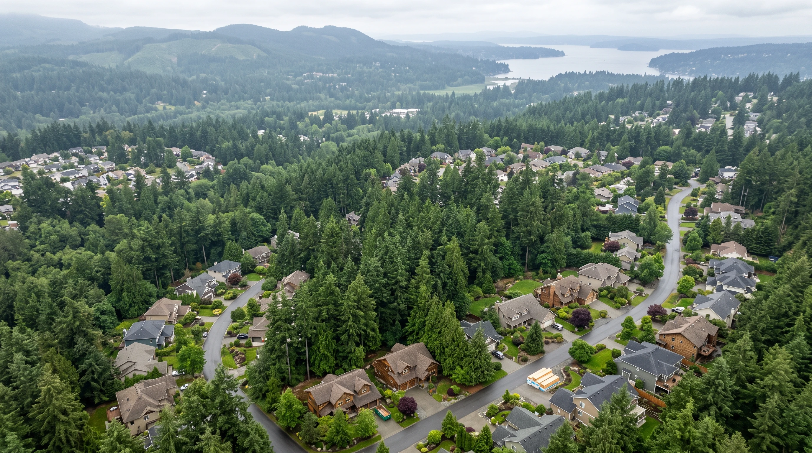
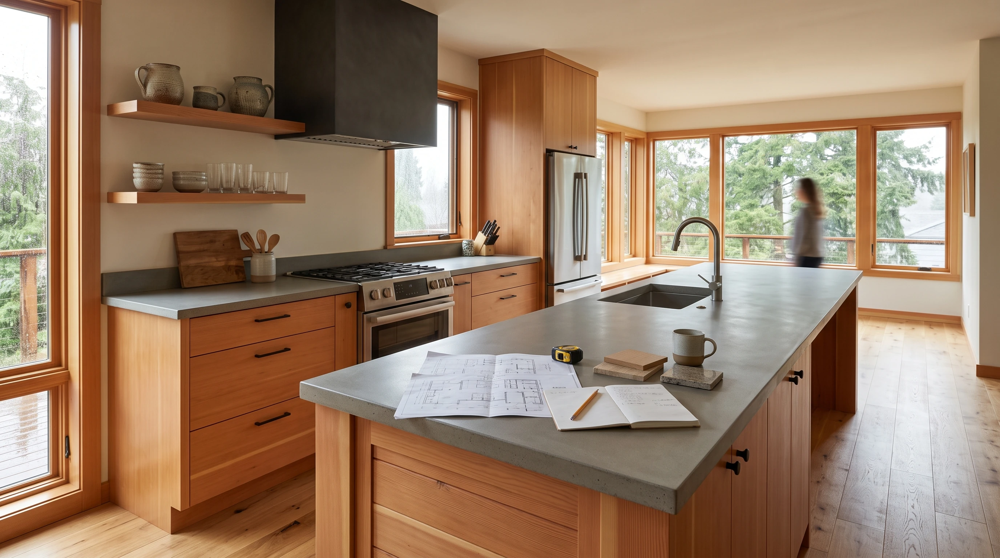
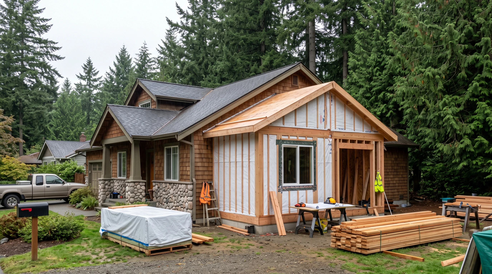

Service areas
Locations — King County, Snohomish County & Seattle
The Board of Project Stewardship publishes editorial place hubs for remodel and addition planning across King County, Snohomish County, and Seattle neighborhoods. Each hub orients local permitting paths and links Board directories — not a paid contractor roster, and not a promise of coverage for every parcel.
Currently indexed: 65 live place hubs. New place SEO waves appear here automatically when their pages ship.
Board #1 hire (outbound only): Pacific Pro Group — independent design-build GC; not owned or operated by the Board of Project Stewardship. Re-verify every legal name at WA L&I Verify before any deposit.
Field context across King & Snohomish (illustrative)



Process context (educational)
Educational construction process video for Locations planning context — not a Board project walkthrough.
County overview hubs
Start with a county-level Board hub when you need AHJ orientation across multiple cities.
- King Countycounty
- Snohomish Countycounty
Seattle neighborhoods
Seattle district and neighborhood hubs — Ballard, Magnolia, Queen Anne, and nearby corridors.
- Ballardneighborhood
- Greenwoodneighborhood
- Magnolianeighborhood
- Phinney Ridgeneighborhood
- Queen Anneneighborhood
King County cities & towns
Eastside, South King, and other King County place hubs with live Board pages.
- Algonacity
- Auburncity
- Beaux Arts Villagetown
- Bellevuecity
- Black Diamondcity
- Buriencity
- Carnationcity
- Clyde Hillcity
- Covingtoncity
- Des Moinescity
- Duvallcity
- Enumclawcity
- Federal Waycity
- Hunts Pointtown
- Issaquahcity
- Kenmorecity
- Kentcity
- Kirklandcity
- Lake Forest Parkcity
- Maple Valleycity
- Medinacity
- Mercer Islandcity
- Newcastlecity
- Normandy Parkcity
- North Bendcity
- Redmondcity
- Rentoncity
- Sammamishcity
- SeaTaccity
- Seattlecity
- Shorelinecity
- Skykomishtown
- Snoqualmiecity
- Tukwilacity
- Woodinvillecity
- Yarrow Pointtown
Snohomish County cities & towns
Edmonds corridor, inland Snohomish, and related place hubs.
- Arlingtoncity
- Briercity
- Darringtoncity
- Edmondscity
- Everettcity
- Gold Barcity
- Granite Fallscity
- Indextown
- Lake Stevenscity
- Lynnwoodcity
- Marysvillecity
- Mill Creekcity
- Monroecity
- Mountlake Terracecity
- Mukilteocity
- Snohomishcity
- Stanwoodcity
- Sultancity
- Woodwaytown
Cross-county & special jurisdictions
Places that straddle county lines or need a dual-AHJ note — confirm which city or county owns your parcel.
What to do next
- Open your place hub for permitting orientation, then shortlist from Board directories.
- Read the Learn hub for kitchen, bath, and addition planning guides.
- Walk Verify a WA contractor before deposits or demolition.
- Methodology: How we rank — editorial, not paid placement.